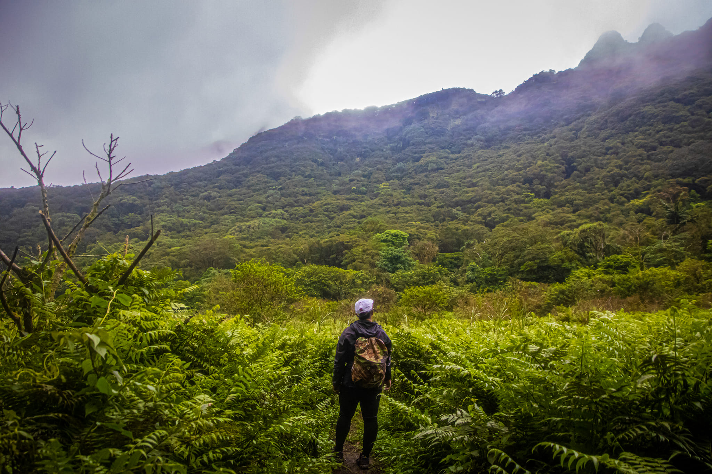
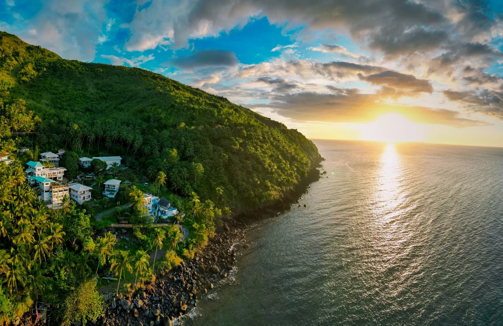
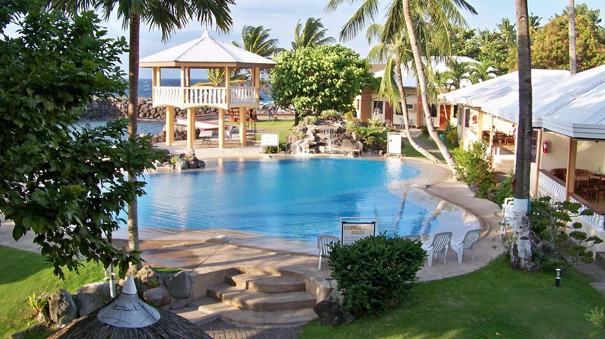

Best Time to Visit
Plan your trip around Camiguin's seasons to enjoy the best weather, clearest waters, and most vibrant celebrations.

☀️ Dry Season (November–May)
The best time to visit is during the dry season. Rainfall is minimal, skies are clear, and sea conditions are calm. March to May offers the best visibility for water activities. October features the famous Lanzones Festival, the island's biggest annual celebration.
🌧️ Wet Season (June–September)
The rainy season brings lush green scenery and fewer tourists. However, heavy rains can limit outdoor activities, and rough seas may restrict water-based experiences. This is the best time for budget travelers seeking solitude.
Getting To Camiguin
Camiguin is accessible by a combination of air and sea travel, with the journey itself being part of the adventure.

✈️ By Air
Fly into Cagayan de Oro (CDO) airport from Manila or Cebu on major carriers. Flights take approximately 1-2 hours from major Philippine cities.
🚌 Land Transfer
From CDO airport, take a bus or van to Balingoan port (approximately 2 hours drive). Several shuttle services are available for this route.
🚢 By Ferry
From Balingoan, take a RORO ferry to Benoni Port in Camiguin (1.5 hours). Speedboats also available (45 minutes). Ferries depart hourly throughout the day.
Getting Around the Island
Camiguin's single circumferential road makes navigation straightforward and convenient.

🏍️ Motorcycle Rental
The most popular way to explore Camiguin. Rental scooters and motorcycles are widely available. The circumferential road is 64km total, taking 2-3 hours by motorcycle depending on stops.
🚕 Tricycles & Taxis
Tricycles are ideal for short distances within towns. Habal-habal (motorcycle taxis) are available for longer journeys. Negotiate fares before boarding.
Where to Stay in Camiguin
From cozy beachfront cottages to comfortable resorts, Camiguin offers welcoming accommodations for every budget.

Budget Guesthouses
Clean and comfortable rooms at very reasonable prices (₱500–₱1,500/night). Often family-run with personalized service. Located throughout the island.
Mid-Range Resorts
Beachfront cottages and pools (₱1,500–₱3,500/night). Most concentrated on the northern coast near Mambajao. Offer good amenities and local cuisine.
Boutique & Premium
Elevated amenities and unique experiences (₱3,500+/night). Fewer options but providing luxury island experiences with full services.
Accommodation Concentration
Most resorts and guesthouses are clustered on Camiguin's northern coast, especially in and around Mambajao (the provincial capital). This area offers the best access to restaurants, services, and attractions. For a more secluded experience, accommodations are also available in other municipalities.